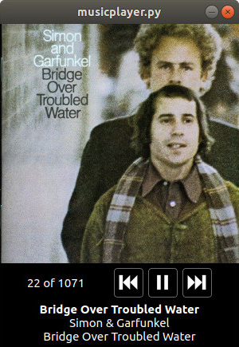

Animator (Project page - Tweets)
Hand-drawn animation program with drawing tablet support, smooth stroking and onion skinning. It started as an OpenGL and Qt exercise.

Bachelor thesis (Project page - Tweet)
A Julia implementation of an esperimental geometric kernel capable of boolean operations on very complex 3D models. The system is based on LAR. This is the result of my work at the Computational Visual Design Laboratory of Roma Tre University.

Instant Radiosity (Tweet)
Modern interactive implementation of the 1997 "Instant Radiosity" paper presented as final project for the "Practical Course in Visual Computing" at the University of Stuttgart. A Naive Full Monte Carlo Path Tracer on a Compute Shader is used to displace the Virtual Point Lights. Each one has its own shadow map stored into a cubemap texture array. All shadow maps are generated in one render pass.

Software to make an Arduino board and a Maya session communicate. This can be particularly useful to create custom input devices.
Doodle The World
Augmented Reality project done for the VR/AR course at the University of Stuttgart in team with Anastasia Dzamashvili and Jad Maalouly. The app lets you draw multi-colored 3D doodles in AR and then store them on a public server. The doodles will stay in the same physical spot even if an another user scouts the same place with his own device. The idea was basically allowing users to create virtual graffitis on the real world. Unity, Google ARCore and Flask have been used to create all the software pieces involved.

Monte Carlo pathtracer with direct+indirect light contribution splitting and a BVH to accelerate ray-scene intersection. Beside STL, it has only OpenEXR as dependency.
Purdue CGT 247 Final project (Vimeo)
Final project for the "VFX: Particles and Procedural FX" course at Purdue University. Credits to Charles Feng for the bass model. Everything but that has been made by me. Hands and bass made in Maya. Smoke FX and rendering done in Houdini, compositing in Nuke.

Dumplings (Tweet)
Maya, Renderman, and Nuke.
A short animated movie I made in 10 days. Made with Maya, Renderman, and Nuke.
Hoverbike (Tweet)
Maya and Renderman.


maya-stripes (Project page)
A Maya plugin to model several parallel paper stripes imitating the work of Alberto Biasi.

musicplayer.py
Music player application that keeps the play-queue between sessions and resumes it from where it has been left, like iPods do. Written in Python 3 using PySide2, SQLite3, FFmpeg, and PyAudio. It lacks many features like scrubbing a library manager, but I still used it daily for a good while.

CD audio player
A CD-DA player done using a Raspberry Pi 3 Model B+, an USB2 CD drive and an SPI audio interface. The software has been written in Python 3 and relies on cdparanoia for ripping. The program has been integrated in Raspbian as an enabled Systemd unit so it runs at boot as a service. The Pi has been tweaked to consume as less power as possible to leave it for the CD drive.